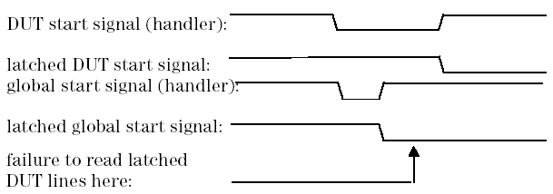

Parameter: gpio_box_dut_read_delay_time
Using the Agilent Technologies GPIO Interface box (E2828A-560), test start signals are usually latched on rising edges. This leads to the fact, that combinations of per DUT start signals with a global start signal may fail, if the DUT start signals are active low and the latches are read out directly after receiving the global test start signal. The following diagram illustrates this:

To deal with this problem, this parameter defines a minimum read delay time between the latched test start signal and the latched DUT start signals. The definition is only active, if both global_test_start_line and per_site_test_start_lines are given. The delay time is given in milliseconds.
Driver default: depends on plug-in
Changeable at run-time: yes
Applicable for: handlers and probers
Example: gpio_box_dut_read_delay_time: 0